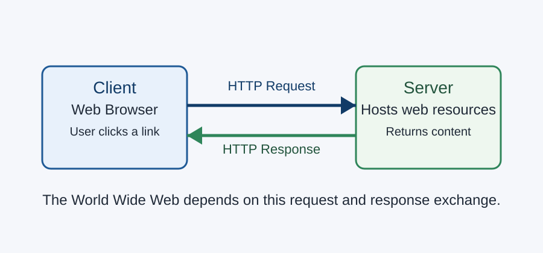

Welcome
The World Wide Web is one of the most important systems in modern life. People use it for school, work, shopping, healthcare, banking, and communication. Behind that everyday experience is a set of technologies that allow browsers and servers to exchange information in a standard way. One of the most important of those technologies is Hypertext Transfer Protocol, better known as HTTP.
This site introduces the relationship between HTTP and the World Wide Web. It explains how the web began, how HTTP messages work, why the protocol is considered stateless, and why secure versions of web communication matter so much today. The topic comes from my Assignment 1 research and is written as a foundation for later project milestones. The project guide says Milestone 1 should begin from the Assignment 1 research, include at least six pages, use one shared menu, and demonstrate headings, lists, images, tables, and CSS styling with selectors and a grid or flex layout. fileciteturn1file8L1-L24
